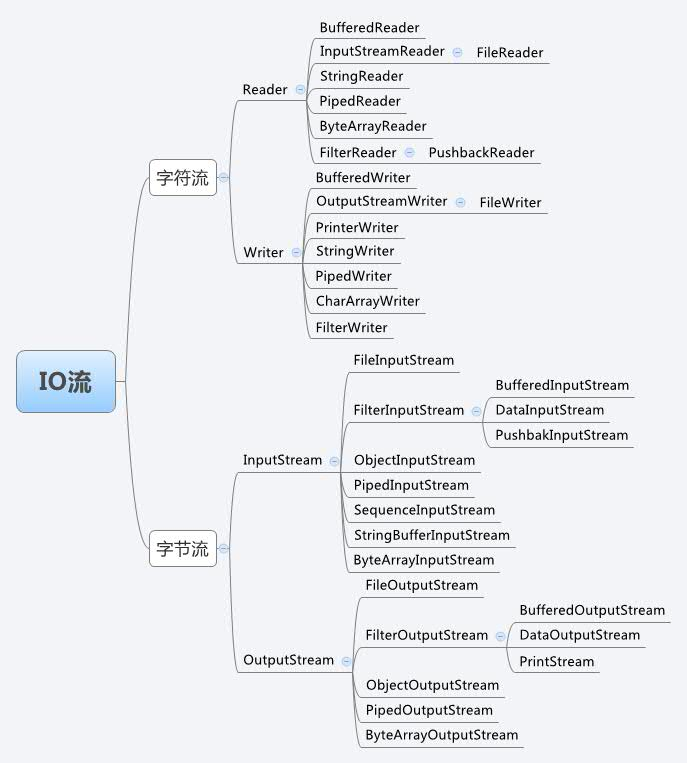

一、字节与字符
字节与字符之间的关系 Java采用unicode编码，通讲，2个字节来表示一个字符。 在0~127整数之间的字符映射，unicode向下兼容ASCII，也就是1个字节表示一个字符。 一个中文或英文字符的unicode编码都占2个字节。
| 编码方式 | 英文字符 | 中文字符 |
|---|---|---|
| GB 2312、GBK | 1 | 2 |
| UTF-8 | 1 | 3-4 |
二、IO流
Java的IO流是实现输入/输出的基础，它可以方便地实现数据的输入/输出操作，在Java中把不同的输入/输出源抽象表述为"流”。 流是一组有顺序的字节集合，是对数据传输的总称或抽象。 流有输入和输出，输入时是流从数据源流向程序。输出时是流从程序传向数据源，而数据源可以是内存，文件，网络或程序等。
大致步骤：java程序–>JVM虚拟机–>OS操作系统–>OS调用读写数据方法–>把文件写入到内存/从内存写出到文件
三、字节流和字符流
FileInputStream文件字节输入流：将硬盘中的文件数据写入内存中
FileOutputStream文件字节输出流：将内存中数据写出到硬盘文件
//文件复制
//UTF-8中文一般占三个字节，GBK占2个字节
public static void main(String[] args) {
//jdk7新特新：将流对象放到try前面的括号中，不用手动关闭，使用完会自动关闭流对象
try (
FileInputStream fis = new FileInputStream(
new File("JavaTest/1.txt"));
FileOutputStream fos = new FileOutputStream(
new File("JavaTest/2.txt"));
){
byte[] buf = new byte[1024];
int len=-1;
while ((len=fis.read(buf))!=-1){
fos.write(buf,0,len);
}
} catch (IOException e) {
e.printStackTrace();
}
}
FileReader:文件字符输入流
FileWriter:文件字符输出流
用于纯文本输入和输出。flush：刷新缓存区，流对象可以继续使用；close：先刷新缓存区再关闭流对象，无法再次使用流对象。
BufferedInputStream
BufferedInputStream
BufferedReader
BufferedWriter
缓冲流，用来包装字节流和字符流，内置默认大小的缓冲区数组，面向缓冲，减少系统IO次数，提高读写效率
OutputStreamWriter
InputStreamReader
转换流。可以按照指定的字符编码进行读取和写入
ObjectOutStream
ObjectInputStream
序列化流。一个对象需要序列化，必须满足两个条件：
1.实现serializable接口，该接口只是用于标记，可以自己指定serialVersionUID
2.该类所有属性必须是可序列化的。如果一个属性不需要序列化，可使用transient关键字修饰
PrintWriter
打印流。只负责输入数据，不负责读取数据。可打印任意类型的值。